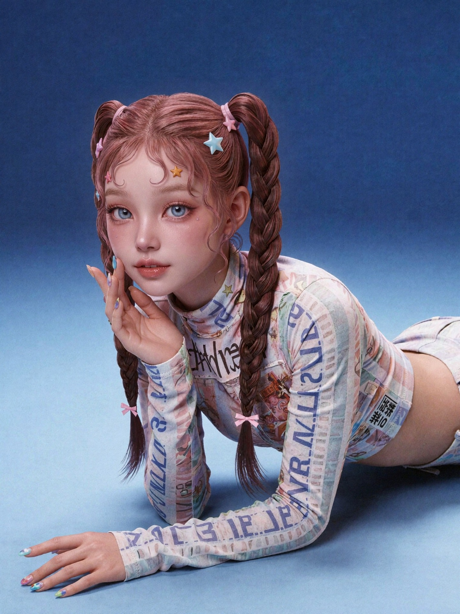
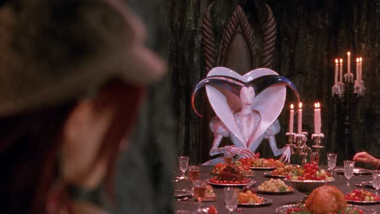
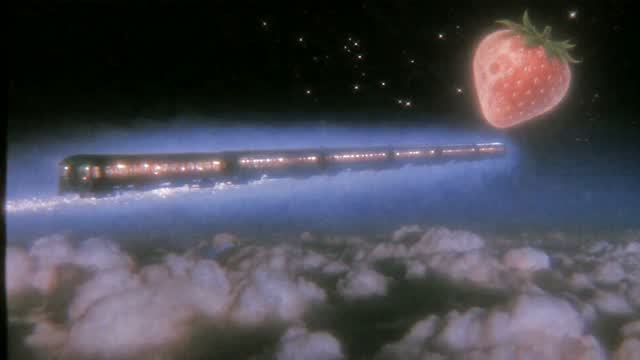

RECORD
AI visual studio
Character · Film · VFX
Selected work08
자체 IP와
외주 제작 프로젝트.
PROM RECORD / VISUAL PRODUCTIONVisual
Visual
production.
캐릭터 IP · AI 영상 · VFX
PROM RECORD / VISUAL STUDY
CHARACTER · FILM · VFXIMAGE VIEW
Z12 세계관 보기전체 작품 보기드래그하여 시점 이동 · 작품을 누르면 상세 보기VISUAL STUDY / 01
COMMISSIONED WORK / 외주 프로젝트

VIEW ↗01
Z12열두 별자리의 아이돌 세계관
Character IP
↗
VIEW ↗02
The forbidden key금지된 열쇠와 달빛 숲
AI Film
↗ VIEW ↗
VIEW ↗03
NEURA — DreamNEURA 뮤직비디오
AI Film
↗
VIEW ↗04
Villain StrawberryAI 비주얼 필름
AI Film
↗ VIEW ↗
VIEW ↗05
First encounter, NEURA별에서 온 첫 만남 · POPUP7@판교
Exhibition
↗ VIEW ↗
VIEW ↗06
Lumi’s storyLUMI 캐릭터 프리뷰
Character IP
↗